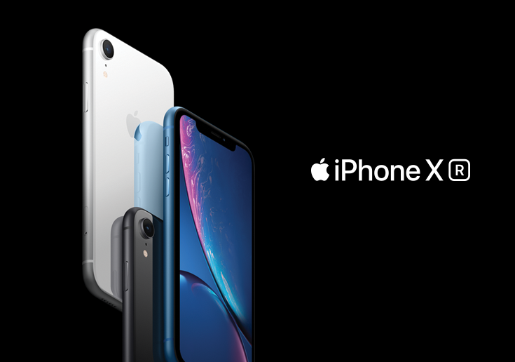
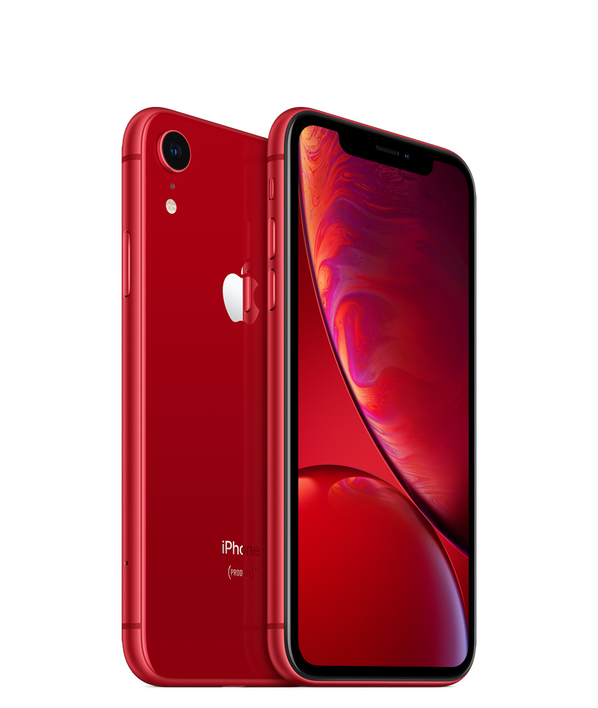
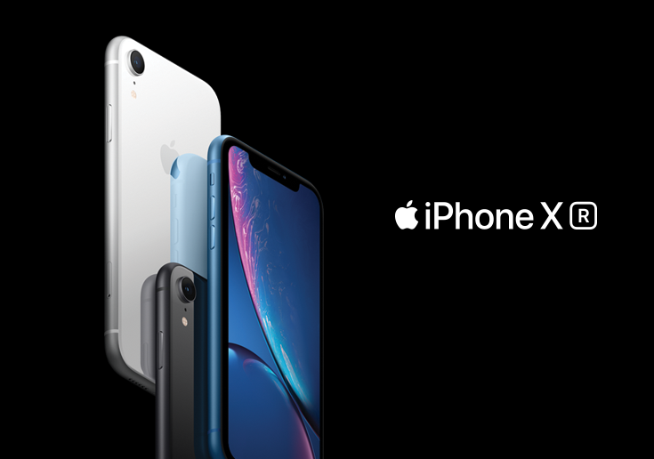
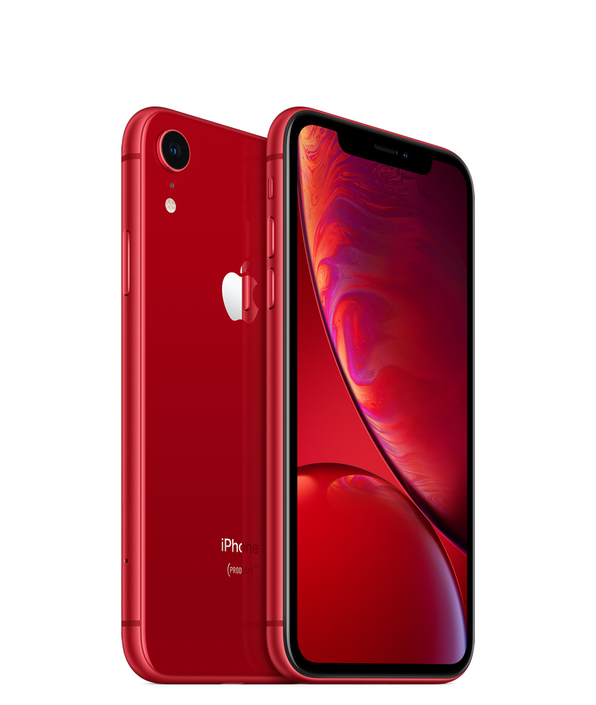

Shop now at the Apple Store online with many great ways to buy. Get free, no-contact delivery, Specialist help and more
Iphone 13 Pro Max

Expected Launch:30thSeptember,2021 (pre-register now)
Apple iPhone 13 flaunts a 6.2-inch OLED Super Retina display with 1170x2532 pixels resolution and pixel density of 450 PPI. The phone is powered by hexa-core Apple A14 Bionic processor with 4GB RAM and 64GB storage. The device runs on iOS 14 operating system and the chipset features Apple GPU for graphics processing. The iPhone 13 packs dual rear cameras which includes 13MP primary sensor and 13MP ultrawide sensor. On the front, the phone has a 13MP wide camera for selfies, Face ID and FaceTime calling. The model gets a 3,285mAh battery that supports W fast charging via lightning port, and wireless charging.

More Exclusive offers on Iphone13 Pro Max Till:30thSeptember,2021
Size: 6.7 inches,
Resolution: 2778 x 1284 pixels, 19.5:9 ratio, 457 PPI,
Technology: OLED,
Features: 120Hz refresh rate, HDR support, Oleophobic coating, Scratch-resistant glass, Ambient light sensor, Proximity sensor,
HARDWARE,
System chip: Apple A15 Bionic,
Processor: 64-bit,
GPU: Yes,
Internal storage: 128GB, not expandable,
Device type:Smartphone,
OS: iOS,
Capacity: 4352 mAh,
Type: Li - Ion, Not user replaceable,
Charging: USB Power Delivery, Qi wireless charging, MagSafe wireless charging,
CAMERA
Rear: Triple camera,
Main camera: 12 MP (OIS, PDAF),
Specifications: Aperture size: F1.6; Focal length: 26 mm; Pixel size: 1.4 μm,
Second camera: 12 MP (Telephoto, OIS, PDAF),
Specifications: Optical zoom: 2.5x; Aperture size: F2.0; Focal Length: 65 mm,
Third camera: 12 MP (Ultra-wide),
Specifications: Aperture size: F1.8; Focal Length: 13 mm,
Video recording: 3840x2160 (4K UHD) (60 fps), 1920x1080 (Full HD) (240 fps), 1280x720 (HD) (30 fps),
Features: OIS, HDR, Time-lapse video, Continuous autofocus, Picture-taking during video recording, Video light,
Front: 12 MP (Time-of-Flight (ToF), EIS, HDR, Slow-motion videos),
Video capture: 3840x2160 (4K UHD) (60 fps),
DESIGN-
Resistance: Water, Splash, Dust; IP68,
Biometrics: 3D Face unlock, In-screen fingerprint,
Keys: Left: Volume control, Other; Right: Lock/Unlock key,
CELLULAR,
Data Speed: LTE-A, HSDPA+ (4G) 42.2 Mbit/s, HSUPA 5.76 Mbit/s, UMTS,
Dual SIM: Yes,
SIM type: Nano SIM, eSIM,
HD Voice: Yes,
VoLTE: Yes,
MULTIMEDIA,
Headphones: No 3.5mm jack,
Speakers: Earpiece, Loudspeaker,
Features: Dolby Atmos,
Screen mirroring: Wireless screen share,
Additional microphone(s): for Noise cancellation,
CONNECTIVITY & FEATURES,
Bluetooth: Yes,
Wi-Fi: 802.11 a, b, g, n, ac, ax (Wi-Fi 6), dual-band; MIMO, Wi-Fi Direct, Hotspot,
USB: Lightning,
Features: Charging, Headphones port,
Location: GPS, A-GPS, Glonass, Galileo, BeiDou, QZSS, Cell ID, Wi-Fi positioning,
Sensors: Accelerometer, Gyroscope, Compass, Barometer, LiDAR scanner,
Other: NFC, UMA (Wi-Fi Calling),
Hearing aid compatible: M3, T4
CAMERA Rear: Triple camera, Main camera: 12 MP (OIS, PDAF), Specifications: Aperture size: F1.6; Focal length: 26 mm; Pixel size: 1.4 μm, Second camera: 12 MP (Telephoto, OIS, PDAF),
Specifications: Optical zoom: 2.5x; Aperture size: F2.0; Focal Length: 65 mm, Third camera: 12 MP (Ultra-wide), Specifications: Aperture size: F1.8; Focal Length: 13 mm, Video recording: 3840x2160 (4K UHD) (60 fps), 1920x1080 (Full HD) (240 fps), 1280x720 (HD) (30 fps), Features: OIS, HDR, Time-lapse video, Continuous autofocus, Picture-taking during video recording, Video light, Front: 12 MP (Time-of-Flight (ToF), EIS, HDR, Slow-motion videos), Video capture: 3840x2160 (4K UHD) (60 fps), DESIGN- Resistance: Water, Splash, Dust; IP68, Biometrics: 3D Face unlock, In-screen fingerprint, Keys: Left: Volume control, Other; Right: Lock/Unlock key, CELLULAR, Data Speed: LTE-A, HSDPA+ (4G) 42.2 Mbit/s, HSUPA 5.76 Mbit/s, UMTS, Dual SIM: Yes, SIM type: Nano SIM, eSIM, HD Voice: Yes, VoLTE: Yes, MULTIMEDIA, Headphones: No 3.5mm jack, Speakers: Earpiece, Loudspeaker,
Features: Dolby Atmos, Screen mirroring: Wireless screen share, Additional microphone(s): for Noise cancellation, CONNECTIVITY & FEATURES, Bluetooth: Yes, Wi-Fi: 802.11 a, b, g, n, ac, ax (Wi-Fi 6), dual-band; MIMO, Wi-Fi Direct, Hotspot, USB: Lightning, Features: Charging, Headphones port, Location: GPS, A-GPS, Glonass, Galileo, BeiDou, QZSS, Cell ID, Wi-Fi positioning, Sensors: Accelerometer, Gyroscope, Compass, Barometer, LiDAR scanner, Other: NFC, UMA (Wi-Fi Calling), Hearing aid compatible: M3, T4
iPhone 12 Pro Max


Dimensions 160.8 x 78.1 x 7.4 mm (6.33 x 3.07 x 0.29 in),
Weight 228 g (8.04 oz),
Build Glass front (Gorilla Glass), glass back (Gorilla Glass), stainless steel frame,
SIM Single SIM (Nano-SIM and/or eSIM) or Dual SIM (Nano-SIM, dual stand-by) - for China,
IP68 dust/water resistant (up to 6m for 30 mins),
Apple Pay (Visa, MasterCard, AMEX certified),
DISPLAY Type Super Retina XDR OLED, HDR10, Dolby Vision, 800 nits (typ), 1200 nits (peak),
Size 6.7 inches, 109.8 cm2 (~87.4% screen-to-body ratio),
Resolution 1284 x 2778 pixels, 19.5:9 ratio (~458 ppi density),
Protection Scratch-resistant ceramic glass, oleophobic coating,
True-tone
PLATFORM OS iOS 14.1, upgradable to iOS 14.6,
Chipset Apple A14 Bionic (5 nm),
CPU Hexa-core (2x3.1 GHz Firestorm + 4x1.8 GHz Icestorm),
GPU Apple GPU (4-core graphics),
MEMORY Card slot No,
Internal 128GB 6GB RAM, 256GB 6GB RAM, 512GB 6GB RAM,
MAIN CAMERA Quad 12 MP, f/1.6, 26mm (wide), 1.7µm, dual pixel PDAF, sensor-shift stabilization (IBIS),
12 MP, f/2.2, 65mm (telephoto), 1/3.4", 1.0µm, PDAF, OIS, 2.5x optical zoom,
TOF 3D LiDAR scanner (depth),
Features Dual-LED dual-tone flash, HDR (photo/panorama),
Video 4K@24/30/60fps, 1080p@30/60/120/240fps, 10‑bit HDR, Dolby Vision HDR (up to 60fps), stereo sound rec.
SELFIE CAMERA Dual 12 MP, f/2.2, 23mm (wide), 1/3.6",
SL 3D, (depth/biometrics sensor),
Features HDR,
Video-gyro-EIS,
SOUND Loudspeaker Yes, with stereo speakers,
COMMS WLAN Wi-Fi 802.11,
Bluetooth 5.0, A2DP, LE,
GPS Yes, with A-GPS, GLONASS, GALILEO, QZSS,
USB Lightning, USB 2.0
FEATURES Sensors Face ID, accelerometer, gyro, proximity, compass, barometer,
Siri natural language commands and dictation,
Ultra Wideband (UWB) support,
BATTERY Type Li-Ion 3687 mAh, non-removable (14.13 Wh),
Charging Fast charging 20W, 50% in 30 min (advertised),
USB Power Delivery 2.0,
Qi magnetic fast wireless charging 15W,
Stand-by Up to 20 h (multimedia),
Music play Up to 80 h,
MISC Colors Silver, Graphite, Gold, Pacific Blue
iPhone 11 Pro Max


Build Glass front (Gorilla Glass), glass back (Gorilla Glass), stainless steel frame,
SIM Single SIM (Nano-SIM and/or eSIM) or Dual SIM (Nano-SIM, dual stand-by) - for China,
IP68 dust/water resistant (up to 4m for 30 mins),
Apple Pay (Visa, MasterCard, AMEX certified),
DISPLAY Type Super Retina XDR OLED, HDR10, Dolby Vision, 800 nits (typ), 1200 nits (peak),
Size 6.5 inches, 102.9 cm2 (~83.7% screen-to-body ratio),
Resolution 1242 x 2688 pixels, 19.5:9 ratio (~458 ppi density),
Protection Scratch-resistant glass, oleophobic coating,
True-tone
PLATFORM OS iOS 13, upgradable to iOS 14.6,
Chipset Apple A13 Bionic (7 nm+),
CPU Hexa-core (2x2.65 GHz Lightning + 4x1.8 GHz Thunder),
GPU Apple GPU (4-core graphics),
MEMORY Card slot No,
Internal 64GB 4GB RAM, 256GB 4GB RAM, 512GB 4GB RAM,
MAIN CAMERA Triple 12 MP, f/1.8, 26mm (wide), 1/2.55", 1.4µm, dual pixel PDAF, OIS,
12 MP, f/2.0, 52mm (telephoto), 1/3.4", 1.0µm, PDAF, OIS, 2x optical zoom,
12 MP, f/2.4, 120˚, 13mm (ultrawide), 1/3.6",
Features Dual-LED dual-tone flash, HDR (photo/panorama),
SELFIE CAMERA Dual 12 MP, f/2.2, 23mm (wide), 1/3.6",
SL 3D, (depth/biometrics sensor),
Features HDR,
SOUND Loudspeaker Yes, with stereo speakers,
3.5mm jack No,
COMMS WLAN Wi-Fi 802.11 a/b/g/n/ac/6, dual-band, hotspot,
Bluetooth 5.0, A2DP, LE,
GPS Yes, with A-GPS, GLONASS, GALILEO, QZSS,
NFC Yes,
Radio No,
USB Lightning, USB 2.0,
FEATURES Sensors Face ID, accelerometer, gyro, proximity, compass, barometer,
Siri natural language commands and dictation,
Ultra Wideband (UWB) support,
BATTERY Type Li-Ion 3969 mAh, non-removable (15.04 Wh),
Charging Fast charging 18W, 50% in 30 min (advertised),
USB Power Delivery 2.0,
Qi wireless charging,
Stand-by Up to 20 h (multimedia),
Music play Up to 80 h,
MISC Colors Matte Space Gray, Matte Silver, Matte Gold, Matte Midnight Green,
TESTS Performance AnTuTu: 459713 (v7), 536883 (v8),
GeekBench: 13870 (v4.4), 3503 (v5.1),
GFXBench: 57fps (ES 3.1 onscreen),
Display Contrast ratio: Infinite (nominal),
Camera Photo / Video,
Loudspeaker -25.6 LUFS (Very good),
Audio quality Noise -94.3dB / Crosstalk -81.5dB,
Battery life ,
Endurance rating 102h
iPhone Xs

Build Glass front (Gorilla Glass), glass back (Gorilla Glass), stainless steel frame,
SIM Nano-SIM, eSIM,
IP68 dust/water resistant (up to 2m for 30 mins),
Apple Pay (Visa, MasterCard, AMEX certified),
DISPLAY Type Super Retina OLED, HDR10, Dolby Vision, 625 nits (typ),
Size 5.8 inches, 84.4 cm2 (~82.9% screen-to-body ratio)
Resolution 1125 x 2436 pixels, 19.5:9 ratio (~458 ppi density),
Protection Scratch-resistant glass, oleophobic coating,
3D Touch
True-tone
PLATFORM OS iOS 12, upgradable to iOS 14.6,
Chipset Apple A12 Bionic (7 nm),
CPU Hexa-core (2x2.5 GHz Vortex + 4x1.6 GHz Tempest),
GPU Apple GPU (4-core graphics),
MEMORY Card slot No,
Internal 64GB 4GB RAM, 256GB 4GB RAM, 512GB 4GB RAM,
MAIN CAMERA Dual 12 MP, f/1.8, 26mm (wide), 1/2.55", 1.4µm, dual pixel PDAF, OIS,
12 MP, f/2.4, 52mm (telephoto), 1/3.4", 1.0µm, PDAF, OIS, 2x optical zoom,
Features Quad-LED dual-tone flash, HDR (photo/panorama),
Video HDR, stereo sound rec.,
SELFIE CAMERA Dual 7 MP, f/2.2, 32mm (standard),
SL 3D, (depth/biometrics sensor),
Features HDR
SOUND Loudspeaker Yes, with stereo speakers,
COMMS WLAN Wi-Fi 802.11 a/b/g/n/ac, dual-band, hotspot,
Bluetooth 5.0, A2DP, LE,
GPS Yes, with A-GPS, GLONASS, GALILEO, QZSS,
USB Lightning, USB 2.0,
FEATURES Sensors Face ID, accelerometer, gyro, proximity, compass, barometer,
Siri natural language commands and dictation,
BATTERY Type Li-Ion 2658 mAh, non-removable (10.13 Wh),
Charging Fast charging 15W, 50% in 30 min (advertised),
USB Power Delivery 2.0,
Qi wireless charging,
Talk time Up to 14 h (multimedia),
Music play Up to 60 h,
MISC Colors Space Gray, Silver, Gold,
GFXBench: 47fps (ES 3.1 onscreen),
Display Contrast ratio: Infinite (nominal), 5.171 (sunlight),
Camera Photo / Video,
Loudspeaker Voice 71dB / Noise 75dB / Ring 78dB,
Audio quality Noise -93.7dB / Crosstalk -82.8dB,
Battery life ,
Endurance rating 72h
iPhone XR

Liquid Retina IPS LCD, 625 nits (typ),
Resolution 828 x 1792 pixels, 19.5:9 ratio (~326 ppi density),
Protection Scratch-resistant glass, oleophobic coating,
True-tone,
Wide color gamut,
PLATFORM OS iOS 12, upgradable to iOS 14.6,
Chipset Apple A12 Bionic (7 nm),
CPU Hexa-core (2x2.5 GHz Vortex + 4x1.6 GHz Tempest),
GPU Apple GPU (4-core graphics),
MEMORY Card slot No,
Internal 64GB 3GB RAM, 128GB 3GB RAM, 256GB 3GB RAM,
MAIN CAMERA Single 12 MP, f/1.8, 26mm (wide), 1/2.55", 1.4µm, PDAF, OIS,
Features Quad-LED dual-tone flash, HDR (photo/panorama),
SELFIE CAMERA Dual 7 MP, f/2.2, 32mm (standard),
SL 3D, (depth/biometrics sensor)
Features HDR,
SOUND Loudspeaker Yes, with stereo speakers,
Bluetooth 5.0, A2DP, LE,
GPS Yes, with A-GPS, GLONASS, GALILEO, QZSS,
USB Lightning, USB 2.0,
FEATURES Sensors Face ID, accelerometer, gyro, proximity, compass, barometer,
Siri natural language commands and dictation,
USB Power Delivery 2.0,
Qi wireless charging,
Talk time Up to 16 h (multimedia),
Music play Up to 65 h,
MISC Colors Black, Red, Yellow, Blue, Coral, White,
GFXBench: 58fps (ES 3.1 onscreen),
Battery life ,
Endurance rating 78h
for more details:visit apple customer care,
greater noida,delhi;
contact as :1111-7000002;
Build Glass front (Gorilla Glass), glass back (Gorilla Glass), stainless steel frame,
SIM Nano-SIM, eSIM,
IP68 dust/water resistant (up to 2m for 30 mins),
Apple Pay (Visa, MasterCard, AMEX certified),
DISPLAY Type Super Retina OLED, HDR10, Dolby Vision, 625 nits (typ),
Size 5.8 inches, 84.4 cm2 (~82.9% screen-to-body ratio)
Resolution 1125 x 2436 pixels, 19.5:9 ratio (~458 ppi density),
Protection Scratch-resistant glass, oleophobic coating,
3D Touch
True-tone
PLATFORM OS iOS 12, upgradable to iOS 14.6,
Chipset Apple A12 Bionic (7 nm),
CPU Hexa-core (2x2.5 GHz Vortex + 4x1.6 GHz Tempest),
GPU Apple GPU (4-core graphics),
MEMORY Card slot No,
Internal 64GB 4GB RAM, 256GB 4GB RAM, 512GB 4GB RAM,
MAIN CAMERA Dual 12 MP, f/1.8, 26mm (wide), 1/2.55", 1.4µm, dual pixel PDAF, OIS,
12 MP, f/2.4, 52mm (telephoto), 1/3.4", 1.0µm, PDAF, OIS, 2x optical zoom,
Features Quad-LED dual-tone flash, HDR (photo/panorama),
Video HDR, stereo sound rec.,
SELFIE CAMERA Dual 7 MP, f/2.2, 32mm (standard),
SL 3D, (depth/biometrics sensor),
Features HDR
SOUND Loudspeaker Yes, with stereo speakers,
COMMS WLAN Wi-Fi 802.11 a/b/g/n/ac, dual-band, hotspot,
Bluetooth 5.0, A2DP, LE,
GPS Yes, with A-GPS, GLONASS, GALILEO, QZSS,
USB Lightning, USB 2.0,
FEATURES Sensors Face ID, accelerometer, gyro, proximity, compass, barometer,
Siri natural language commands and dictation,
BATTERY Type Li-Ion 2658 mAh, non-removable (10.13 Wh),
Charging Fast charging 15W, 50% in 30 min (advertised),
USB Power Delivery 2.0,
Qi wireless charging,
Talk time Up to 14 h (multimedia),
Music play Up to 60 h,
MISC Colors Space Gray, Silver, Gold,
GFXBench: 47fps (ES 3.1 onscreen),
Display Contrast ratio: Infinite (nominal), 5.171 (sunlight),
Camera Photo / Video,
Loudspeaker Voice 71dB / Noise 75dB / Ring 78dB,
Audio quality Noise -93.7dB / Crosstalk -82.8dB,
Battery life ,
Endurance rating 72h
iPhone XR

Liquid Retina IPS LCD, 625 nits (typ),
Resolution 828 x 1792 pixels, 19.5:9 ratio (~326 ppi density),
Protection Scratch-resistant glass, oleophobic coating,
True-tone,
Wide color gamut,
PLATFORM OS iOS 12, upgradable to iOS 14.6,
Chipset Apple A12 Bionic (7 nm),
CPU Hexa-core (2x2.5 GHz Vortex + 4x1.6 GHz Tempest),
GPU Apple GPU (4-core graphics),
MEMORY Card slot No,
Internal 64GB 3GB RAM, 128GB 3GB RAM, 256GB 3GB RAM,
MAIN CAMERA Single 12 MP, f/1.8, 26mm (wide), 1/2.55", 1.4µm, PDAF, OIS,
Features Quad-LED dual-tone flash, HDR (photo/panorama),
SELFIE CAMERA Dual 7 MP, f/2.2, 32mm (standard),
SL 3D, (depth/biometrics sensor)
Features HDR,
SOUND Loudspeaker Yes, with stereo speakers,
Bluetooth 5.0, A2DP, LE,
GPS Yes, with A-GPS, GLONASS, GALILEO, QZSS,
USB Lightning, USB 2.0,
FEATURES Sensors Face ID, accelerometer, gyro, proximity, compass, barometer,
Siri natural language commands and dictation,
USB Power Delivery 2.0,
Qi wireless charging,
Talk time Up to 16 h (multimedia),
Music play Up to 65 h,
MISC Colors Black, Red, Yellow, Blue, Coral, White,
GFXBench: 58fps (ES 3.1 onscreen),
Battery life ,
Endurance rating 78h
for more details:visit apple customer care,
greater noida,delhi;
contact as :1111-7000002;
Resolution 1125 x 2436 pixels, 19.5:9 ratio (~458 ppi density), Protection Scratch-resistant glass, oleophobic coating, 3D Touch True-tone PLATFORM OS iOS 12, upgradable to iOS 14.6, Chipset Apple A12 Bionic (7 nm), CPU Hexa-core (2x2.5 GHz Vortex + 4x1.6 GHz Tempest), GPU Apple GPU (4-core graphics), MEMORY Card slot No, Internal 64GB 4GB RAM, 256GB 4GB RAM, 512GB 4GB RAM, MAIN CAMERA Dual 12 MP, f/1.8, 26mm (wide), 1/2.55", 1.4µm, dual pixel PDAF, OIS, 12 MP, f/2.4, 52mm (telephoto), 1/3.4", 1.0µm, PDAF, OIS, 2x optical zoom, Features Quad-LED dual-tone flash, HDR (photo/panorama), Video HDR, stereo sound rec., SELFIE CAMERA Dual 7 MP, f/2.2, 32mm (standard), SL 3D, (depth/biometrics sensor), Features HDR
SOUND Loudspeaker Yes, with stereo speakers, COMMS WLAN Wi-Fi 802.11 a/b/g/n/ac, dual-band, hotspot, Bluetooth 5.0, A2DP, LE, GPS Yes, with A-GPS, GLONASS, GALILEO, QZSS, USB Lightning, USB 2.0, FEATURES Sensors Face ID, accelerometer, gyro, proximity, compass, barometer, Siri natural language commands and dictation, BATTERY Type Li-Ion 2658 mAh, non-removable (10.13 Wh), Charging Fast charging 15W, 50% in 30 min (advertised), USB Power Delivery 2.0, Qi wireless charging, Talk time Up to 14 h (multimedia), Music play Up to 60 h, MISC Colors Space Gray, Silver, Gold, GFXBench: 47fps (ES 3.1 onscreen), Display Contrast ratio: Infinite (nominal), 5.171 (sunlight), Camera Photo / Video, Loudspeaker Voice 71dB / Noise 75dB / Ring 78dB, Audio quality Noise -93.7dB / Crosstalk -82.8dB, Battery life , Endurance rating 72h